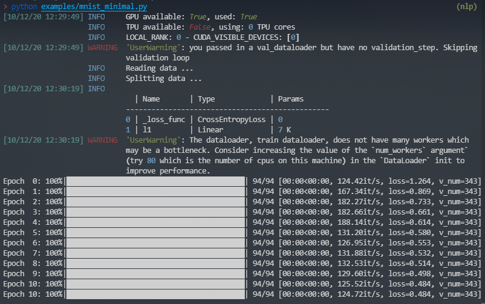

Home
plkit
A wrapper of pytorch-lightning that makes you write even less code.


Installation
pip install -U plkit
Principles
- Being compatible with pytorch-lightning
- Using configurations instead of coding if possible
Features
- Compatible with
pytorch-lightning - Exposed terminal logger
- Better formatted warnings and errors from
pytorch-lightning - Trainer from a dictionary (not only from an
ArgumentParseror aNamespace) - Data module with automatic split for train, val and test datasets
- Auto loss function and optimizer
- Optuna integration
Usage
From pytorch-lightning's minimal example
"""A minimal example for plkit"""
from pathlib import Path
import torch
from torchvision import transforms
from torchvision.datasets import MNIST
from plkit import Module, DataModule, run
class Data(DataModule):
def data_reader(self):
return MNIST(Path(__file__).parent / 'data', train=True,
download=True, transform=transforms.ToTensor())
class LitClassifier(Module):
def __init__(self, config):
super().__init__(config)
self.l1 = torch.nn.Linear(28 * 28, 10)
def forward(self, x):
return torch.relu(self.l1(x.view(x.size(0), -1).float()))
def training_step(self, batch, _):
x, y = batch
loss = self.loss_function(self(x), y)
return {'loss': loss}
if __name__ == '__main__':
configuration = {
'gpus': 1,
'data_tvt': .05, # use a small proportion for training
'batch_size': 32,
'max_epochs': 11
}
run(configuration, Data, LitClassifier)

Using exposed logger
from plkit import logger
# Your logic
if __name__ == "__main__":
# Now you are able to log something outside Modules
logger.info('Fantastic starts ...')
# ...
logger.info('Pipeline done.')
Best practice (Boilerplate)
You can use each objects (trainer, module, datamodule) as the way you do with pytorch-lightning, but we suggest you use them in the following ways:
Running locally
from plkit import Module, DataModule, run
class MyData(DataModule):
...
class MyModel(Module):
...
if __name__ == '__main__':
config = {
...
}
run(config, MyData, MyModel)
Running via SGE
from plkit import Module, DataModule, SGERunner, run
# MyData and MyModel definitions
if __name__ == '__main__':
config = {
...
}
sge = SGERunner(...)
run(config, MyData, MyModel, runner=sge)
# or
sge.run(config, MyData, MyModel)
With optuna
from plkit import (
Module,
DataModule,
Optuna,
OptunaSuggest,
LocalRunner,
run
)
# MyData and MyModel definitions
if __name__ == '__main__':
config = {
...
hparam1=OptunaSuggest(<default>, <type>, *args, **kwargs),
hparam2=OptunaSuggest(<default>, <type>, *args, **kwargs),
}
runner = LocalRunner()
# requires `val_acc` to be logged in `validation_epoch_end`
optuna = Optuna(on='val_acc', n_trials=10, direction='maximize')
run(config, MyData, MyModel, runner=runner, optuna=optuna)
# or
runner.run(config, MyData, MyModel, optuna)
Resources
See more examples in ./examples and full documentation